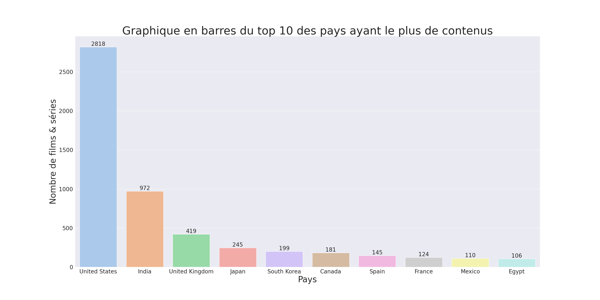
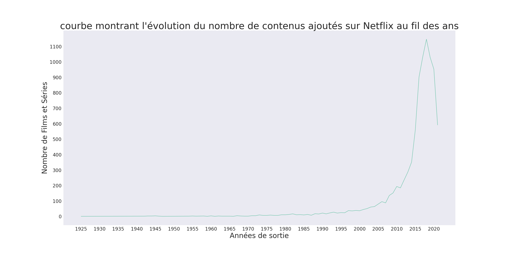
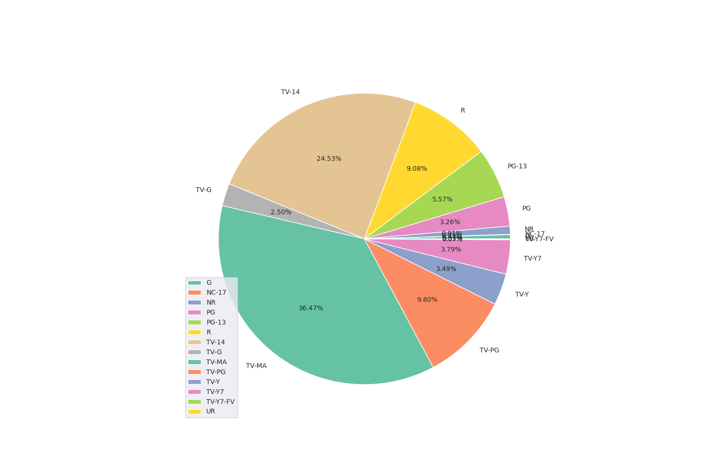
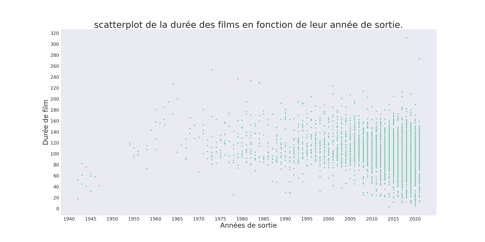
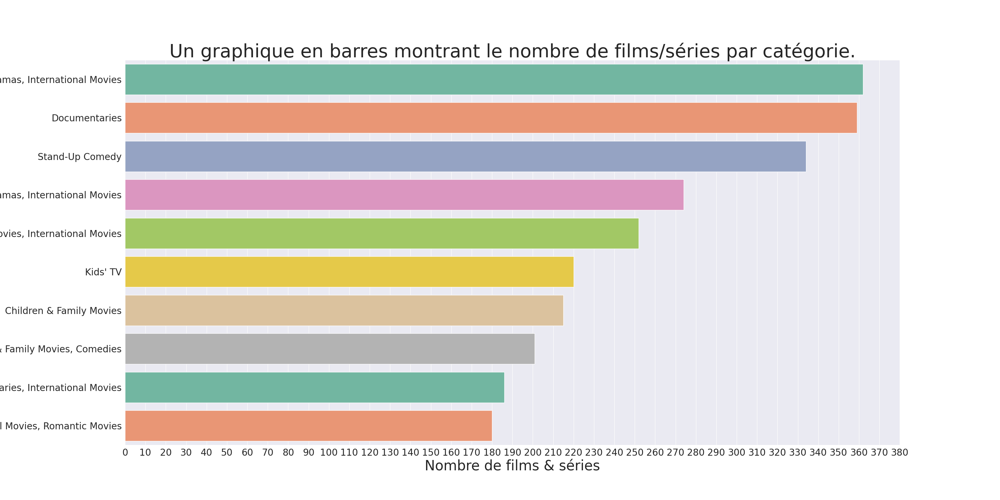

Quels sont les principaux pays producteurs de films et séries sur Netflix ?

D'après le graphique précédent obtenu après analyse, on retiendra que les principaux pays producteurs de films sont :
- Les États-Unis avec au total, 2818 films et séries produits
- L'Inde qui suit avec 972 contenus produits
- Les Royaumes-Unis avec 419 contenus produits
- Le Japon avec 245 contenus produits
- L'Afrique du Sud avec 199 contenus produits
Y a-t-il une évolution du nombre de contenus ajoutés au fil des années ?

D'après ce graphe, On constate une croissance fulgurante dans la production de contenues sur Netflix à partir des années 2000.
L'année 2018 est d'après notre graphe l'année avec la plus grande production de contenues.
Quelle est la classification d'âge dominante sur Netflix ?

D'après le graphe précedent, on retiendra que la classification d'âge dominante sur Netflix est "TV-MA" avec 36,47% de contenues.
Puis viens la classe "TV-14" avec 24.53% de contenues et "TV-PG" avec 9.80% de contenues.
La durée des films varie-t-elle en fonction de leur année de sortie ?

D'après ce graphique, on constate bien qu'il n'y a pas de lien tangible entre ces deux variables puisqu'on n'observe aucune tendance au niveau de
du nuage de point. En conclusion la durée d'un film ne varie pas réellement en fonction de son année de sortie.
Quels sont les genres de contenu les plus populaires ?

D'après le graphique précédent obtenu après analyse, on retiendra que les genres de contenus les plus populaires sont :
- Les Dramas et Films internationaux avec au total, 362 films et séries produits
- Les Documentaires avec 359 films et séries produits
- Les Stand-Up avec 334 films et séries produits
- Les comédies avec 274 films et séries produits
- Les Contenus pour enfants avec 220 films et séries produits